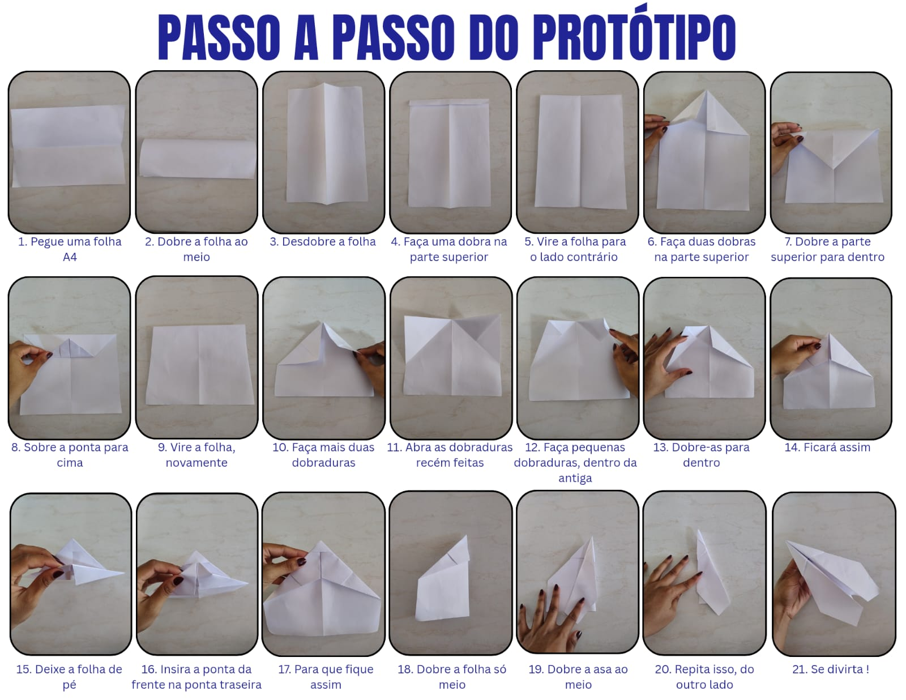
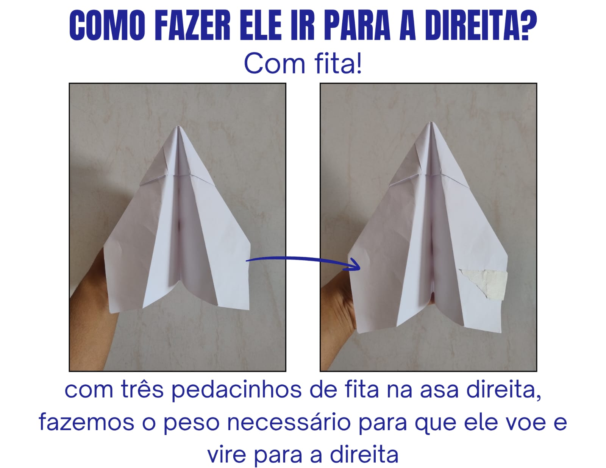
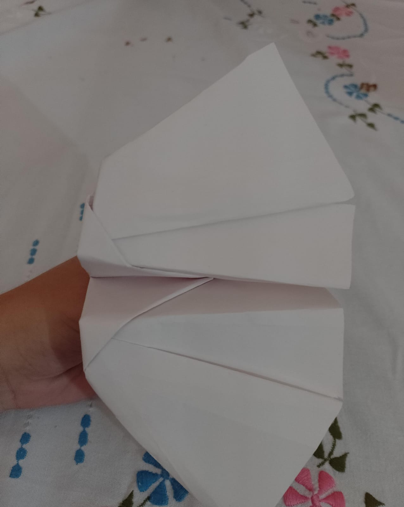
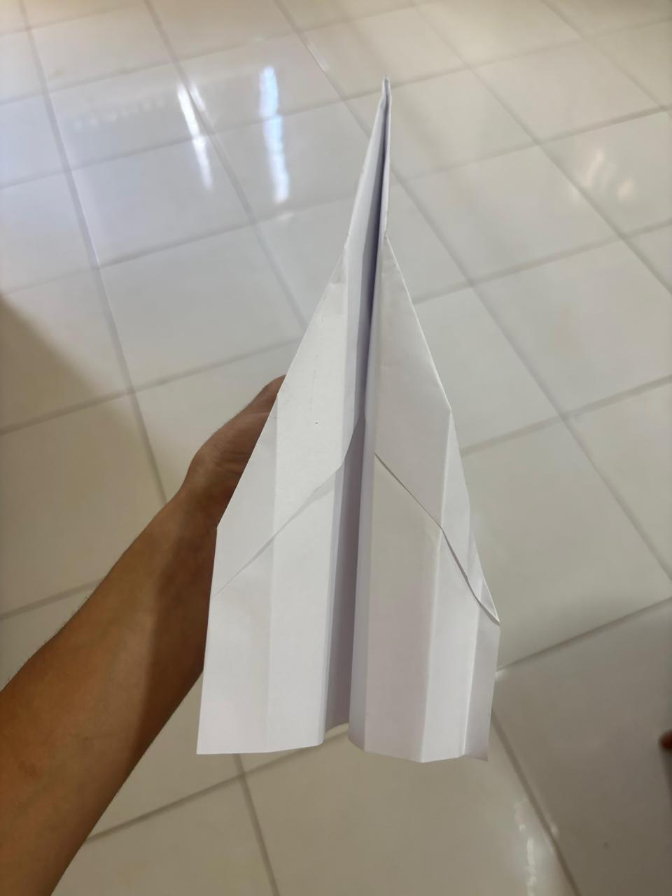
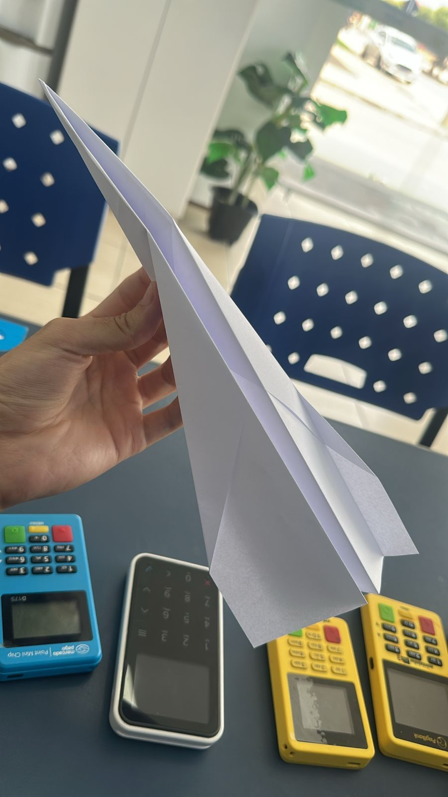
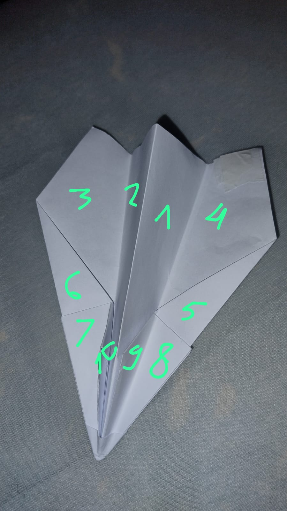
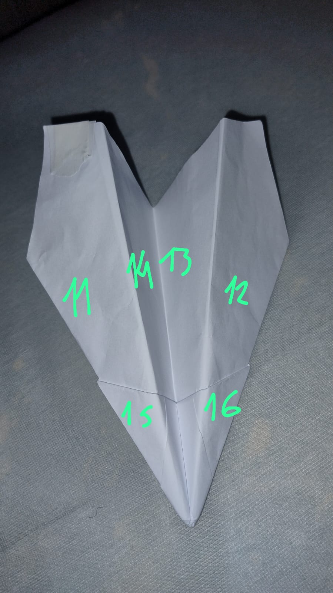
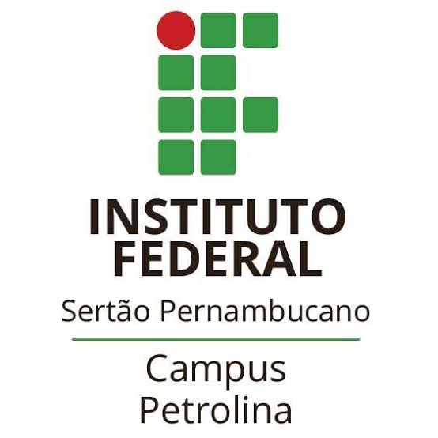
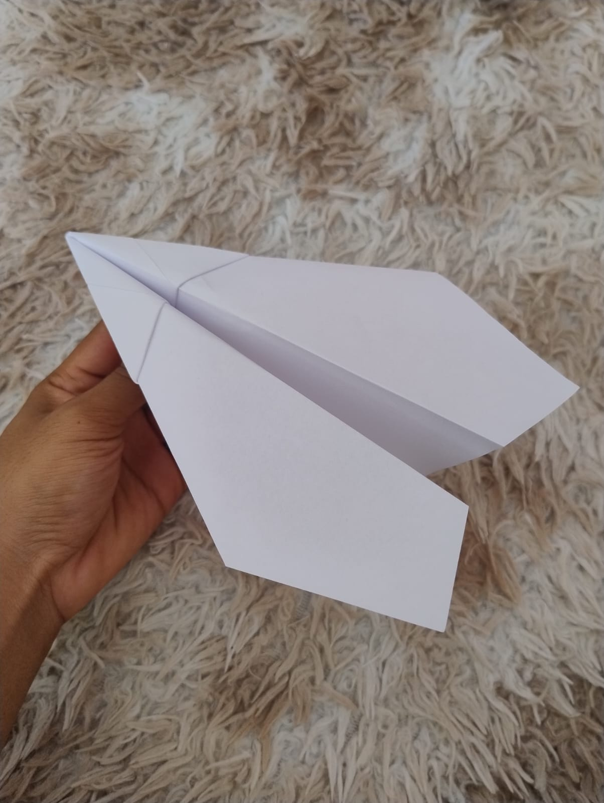
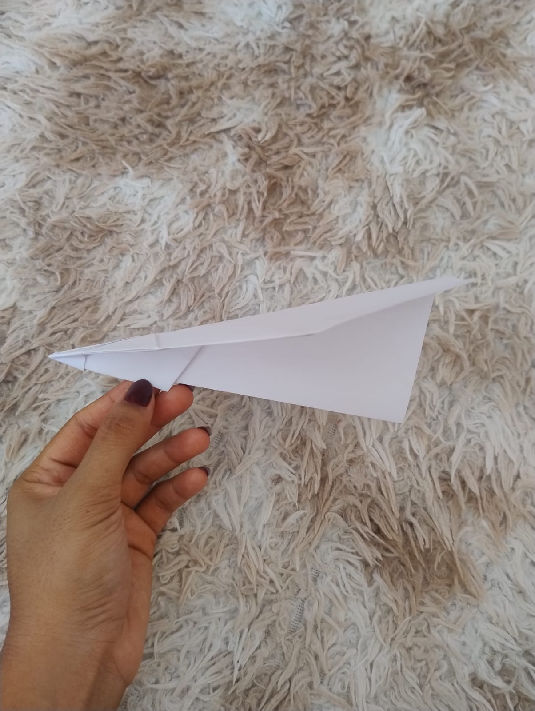

Informe os dados do projeto








Disciplina: Programação Básica
Este trabalho apresenta o desenvolvimento de um avião de papel proposto em uma atividade da disciplina de Programação Básica. O objetivo foi construir um modelo que atendesse a alguns requisitos definidos: percorrer pelo menos 2 metros de distância, alcançar altura mínima de 1,80 metros, possuir no mínimo 16 asas ou dobras e realizar uma curva aproximada de 90 graus durante o voo.
Para a realização do projeto foram utilizados materiais simples, principalmente uma folha de papel A4. Após a construção do primeiro modelo foram realizados testes de lançamento para observar o comportamento do avião durante o voo.
Uma das maiores dificuldades encontradas durante o projeto foi fazer com que o avião realizasse uma curva de aproximadamente 90 graus. Nos primeiros testes, o avião seguia apenas em linha reta, sem apresentar mudança significativa de direção. Para tentar resolver esse problema, foram feitos pequenos ajustes na inclinação de uma das asas laterais. Essa diferença de inclinação ajudou a criar uma alteração na sustentação entre os lados do avião, permitindo que ele começasse a mudar sua trajetória. Foram necessários vários testes até encontrar um equilíbrio entre estabilidade, altura e direção. Após alguns ajustes, foi possível fazer com que o avião realizasse uma curva próxima de 90 graus durante o voo.
A realização deste projeto permitiu observar na prática como pequenas alterações na estrutura de um modelo podem influenciar diretamente no seu desempenho. Durante o desenvolvimento foram necessários vários testes e ajustes até alcançar os resultados desejados. De modo geral, o avião construído conseguiu atender aos requisitos propostos na atividade, alcançando a distância mínima, a altura exigida, o número de asas solicitado e realizando a curva de 90 graus durante o voo.


INÍCIO_PROJETO Gerente_de_Projeto Acad. Eng. Rebeca Gerente_de_Requisitos Acad. Eng. Bruna Projetista Acad. Eng. Manoela Desenvolvedor_1 Acad. Eng. Jauahallau-nehu Desenvolvedor_2 Acad. Eng. Nicolas Teste QA_1 Acad. Eng. Ana Cecilia Teste QA_2 Acad. Eng. Nanda FIM_PROJETO